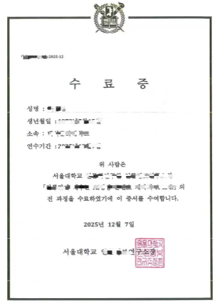

学院通知 · 教学通知
项目发布 | 关于选派学生参加2026年“大川视界”暑期“名校进名企”项目（韩国首尔）（非学分）的通知
发布时间：2026-04-03
为拓展学生国际视野，满足学生对全球优质教育资源的多元化需求，切实提升学生国际竞争力和就业能力，学校现开展 “大川视界”2026年韩国首尔“名校进名企”暑期项目（非学分）的报名工作，现就有关事项通知如下： 一、 项目信息 项目地点：韩国首尔。 项目时间： 2026年 7 月 1 9 日 - 7 月 25 日。 韩方企业：三星集团（ SAMSUNG）、SK海力士（SK Hynix）、LG集团 等。 韩方名校：首尔大学、梨花女子大学。 具体日程及项目详情请参见附件 1：“名校进名企”项目（韩国首尔）简介。 备注：因受企业生产任务等客观因素影响，部分参访企业和分享嘉宾可能会出现调整或变动，但不会减少参访企业的数量和降低参访企业的质量及分享嘉宾的资质。行程以最终版本为准。 二、 项目选派条件 ： 1.热爱祖国、政治立场坚定、品德优良、身心健康，具备在韩国独立学习及生活能力的全日制在校本科生和研究生，专业不限，出发前须年满18周岁； 2.学习成绩优良，综合素质较高； 3.对韩国教育、知名企业文化感兴趣； 4.语言条件：雅思5.5，或托福65，或多邻国90，或四级450，或六级430，或专四/专八合格； 5 .项目期间需严格遵守当地法律法规和参访企业规章制度，接受 项目方的统一管理 。 三、 项目费用 项目费： 9,800元人民币/人 费用包含：项目期间住宿费（含早餐）、课程费、项目期间统一行程内的交通费、指定时间的首尔仁川国际机场接送机、保险费、名企参访等费用。 费用不含：中韩往返机票、护照费、签证费、项目期间中晚餐费用、项目期间因个人需求产生的额外费用等。 四、项目收获 开拓国际视野、提升跨文化沟通能力、促进人文交流与科技融合、体验国际知名企业的真实工作环境、流程、氛围；项目证书；建立对未来择业、择校的初步规划。 证书获得：首尔大学官方结业证书。 五、 申请时间和方式 （一）校内申请时间：即日起至 5 月 10 日 。 （二）校内申请流程： 1.在校本科生 向党委学生工作部申请： 填写附件 2：“大川视界”非学分项目申请表，经学院审核签字盖章后，将申报表电子档（扫描件） 及相关英语成绩支撑材料发送至 xgb-fzzx1@scu.edu.cn 。 2. 在校研究生 向研究生院申请 （ 1）申请人：登录四川大学研究生管理系统--国际交流资助申请应用，选择“寒暑假访学项目申请”，选择相应的访学项目，填写申请，提交并打印出纸质《申请表》，将纸质《申请表》递交导师、学院审核。 （ 2）导师：登录四川大学研究生管理系统--国际交流资助申请应用，在“寒暑假访学项目”中审核并在纸质版《申请表》上签署意见、签字。 （ 3）学院：学院研究生教务老师登录四川大学研究生管理系统--国际交流资助申请应用，在“寒暑假访学项目”中审核，并由学院主管领导在纸质版《申请表》上签署意见、签字、盖公章。 （ 4）学院审核后，纸质《申请表》以学院为单位报研究生院3-325培养办公室。 （ 5）申请人回国后，登录四川大学研究生管理系统--国际交流资助申请应用，在“寒暑假访学项目”申请页面中填写并提交回国总结及以下材料： ① 回校证明（包含项目名称、访学开始和结束时间并由辅导员老师签字） ② 护照首页、签证页及标有出入境日期的页面 ③ 官方颁发的项目证书或成绩单 （三）校内报名结束后，国际处将以邮件方式发送报名成功通知，并组建学生微信群，后续项目报名缴费等事宜将在群里通知。 未完成校内报名流程的同学将不能申请 “大川视界”资助。 六、 特别 提醒 1. 为保障出行安全，至少 8 人成团。如报名人数少于 8 人，项目取消。 2 . 四川大学在籍学生在出国或前往港澳台地区交流学习前，必须通过四川大学学生出国（境）网上备案系统办理备案。备案之后，出国、赴港澳、赴台后续办理程序有所不同，请根据不同目的地选择相应程序。未经备案，学校将不予办理财务报销、成绩认证、学分转换等相关手续和服务： https://global.scu.edu.cn/?channel/490/504 七、 咨询电话 国际合作与交流处： 85404255（项目咨询） 党委学生工作部 85461977(本科生报名咨询） 研究生院： 85405146（研究生报名咨询） 项目方负责人：谢老师 18516384883（微信同号） QQ群（项目介绍、项目分享、出国手续等）： 1018917246。 八、 项目宣讲 &答疑安排 ： 会议时间： 4月12日（周日） 19:00-20:00 腾讯会议： 741-869-426 会议时间： 4月23日（周四） 12:40-13:40 腾讯会议： 180-810-752 会议时间： 5月7日（周四） 12:40-13:40 腾讯会议： 622-874-922 附件1：2026年名校进名企项目（韩国·首尔）简介 附件2-“大川视界”非学分项目申请表 <!--
